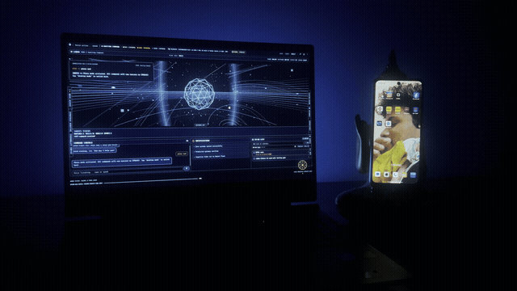
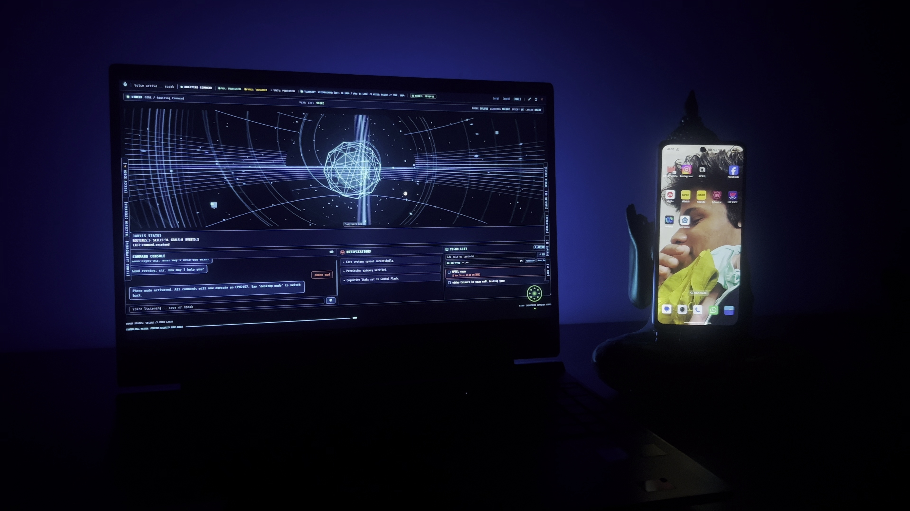
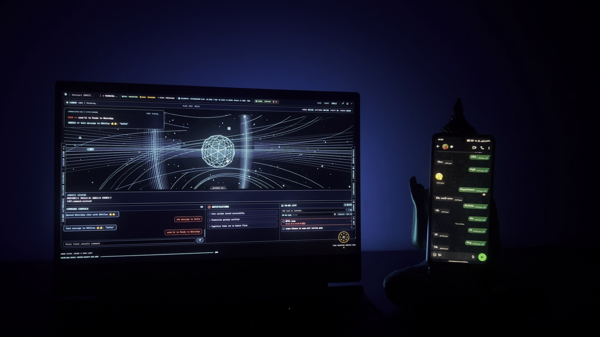
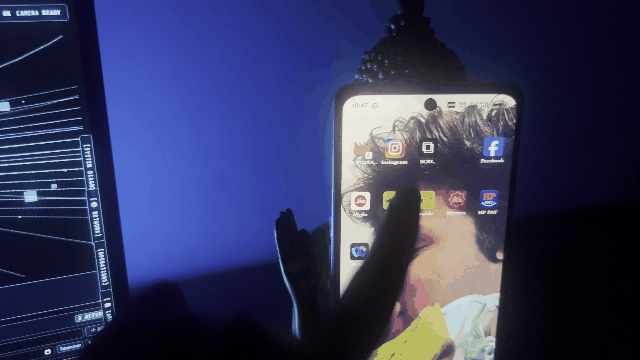
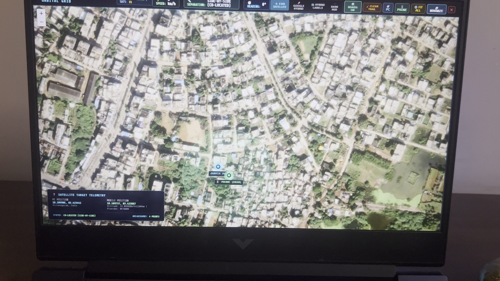
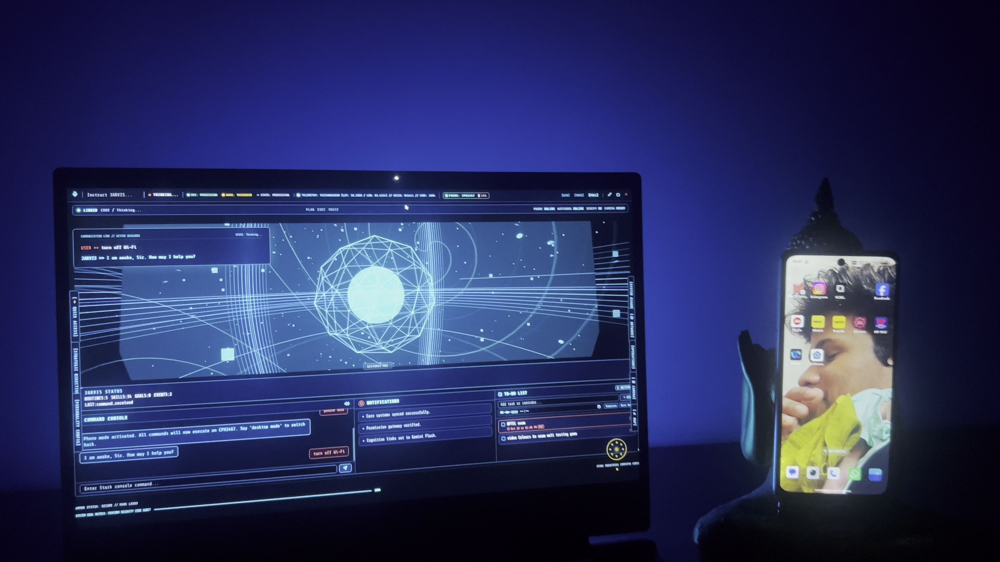

Autonomous Multimodal AI Operating System executing local quantized SLMs (Ollama), real-time Three.js cybernetic HUD, zero-trust wireless Android device control, and multi-platform conversational execution.
Primary Master File: D:\IMG_1183.mp4 (2.0 GB, 4K 60FPS) | Supplementary Takes: IMG_1179.MOV, IMG_1185.MOV, IMG_1187.MOV






FastAPI, Python 3.12, Uvicorn, Asyncio task queue, bi-directional WebSocket event bus streaming audio and telemetry at <50ms latency.
Ollama quantized GGUF engines (Qwen 2.5 7B, Llama 3.1 8B), faster-whisper INT8 local STT, and Google Gemini Flash-Lite cloud fallback.
ChromaDB vector store with HyDE query expansion, cross-encoder reranking, and rolling short-term conversational context buffers.
FastMCP protocol exposing tools to Claude Desktop, Cursor, Electron, and native OS automation scripts with dynamic code synthesis.
adb tcpip on local subnet).
100.98.18.16).8022, granting the desktop orchestrator direct execution capabilities over the phone's native Android OS.
termux-api, battery telemetry, and hardware sensors.